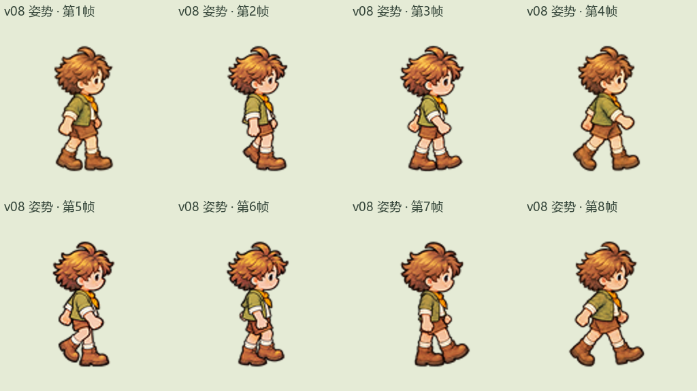

三视图同尺度检查 · v08 姿势锁定
沿用 v08 的原有动作，只处理尺寸、定位与清晰度。四个画面同步显示同一帧。
正在载入…
正视 · 尺寸与清晰度参考
已确认原动作 · 128×128
背视 · 尺寸与清晰度参考
已确认原动作 · 128×128
侧视 · v10 尺寸清晰度校准
v08 同帧原姿势 · 128×128
侧视 · v08 原帧对照
原始预览保留 · 128×128
本次图片生成 0 次。侧视的帧顺序、手脚姿势、关节角度和遮挡全部沿用 v08；每帧仅作整帧等比尺寸与定位处理。四组画面使用相同显示倍率。清晰度处理不补画新细节；原稿中已有的身体比例、笔触差异仍可能可见。
半速新旧对照 · 三视图动图 · 原帧与来源记录
